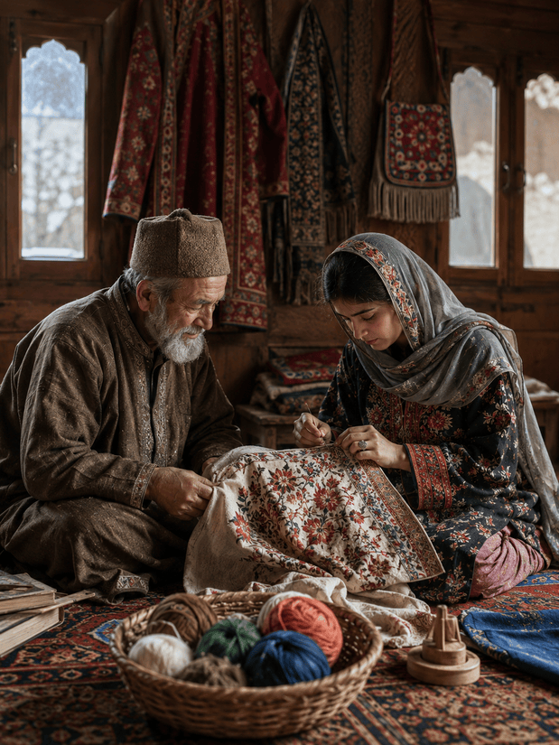

About Project Re-Root
Reviving Tradition,
Reimagining Craft.

"Many cultural practices exist not in written form, but in what people make, wear, and use."
How We Work
The LIGHT Model
Shahida Khanam spent years documenting what her community was losing. We built LIGHT around what she taught us — that revival needs more than passion. It needs a system.
Every elder who passes takes decades of knowledge with her. We record, archive, and digitise — so the stories survive the storyteller.
A craft that can't pay rent dies. We build direct market access so artisans earn what their work is actually worth.
One community proved it works. Now we replicate — carrying the same model to tribal arts across India, chapter by chapter.
When a young woman sees her grandmother's embroidery selling in a city she's never visited — something shifts. That shift is what we're building toward.
The stitch doesn't die if someone learns it. We make sure someone always does.
Our Vision
"A craft that is only remembered is already half gone. We want it practiced, earned from, and passed on."
We are building toward an India where no tribal art form dies because it couldn't find a market. Where the women who carry these traditions in their hands also carry financial independence. Where culture isn't preserved in glass cases but worn, sold, celebrated and alive. That future starts with one community. One craft. One chapter at a time.